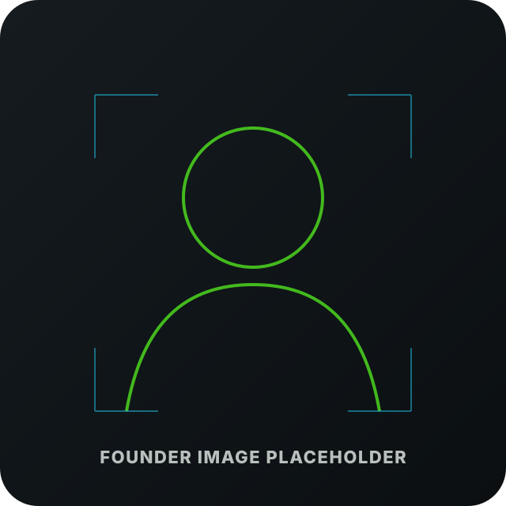

Mission
Help public-safety teams perceive, coordinate, and act with greater confidence in complex environments.
Who we are
A² Perceptions LLC was founded to translate XR, AI, and shared perception research into practical tools for responders operating in complex environments.
Our origin
The A² vision grows from prior work on Ajna, a shared-perception XR research platform exploring how multiple users can see, share, and act on spatial information together. That foundation shaped a larger question: how could similar ideas support responders in search, rescue, police, EMS, and disaster response operations?
A² Perceptions is the commercialization vehicle for turning that research direction into an early platform concept: wearable mission awareness, shared spatial markers, and command-connected field intelligence for public-safety teams.
Mission & vision
Help public-safety teams perceive, coordinate, and act with greater confidence in complex environments.
A future where responders can access shared mission awareness in real time without losing focus on the people and environment in front of them.
Founders
A² is led by two founders with shared roots in Virginia Tech XR research and a focus on translating advanced perception technologies into useful field systems.

Co-Founder · CEO
Matthew Corbett leads A² Perceptions as CEO, guiding company strategy, commercialization direction, and the translation of shared XR research into public-safety mission workflows.

Co-Founder · CTO
Matthew Wilchek leads the technical vision for A², drawing on experience in AI, XR, shared perception, human-in-the-loop systems, and public-sector field technology development.
Why public safety
Search and rescue, law enforcement, EMS, and disaster response all involve teams moving through uncertain environments while coordinating across radio, command, maps, sensors, and time pressure. A² is designed around that operational reality.
The platform is being shaped for missions where coordination and context can affect safety and outcomes.
The company’s research roots are directly aligned with the need to share what responders see, mark, and understand.
The current platform direction uses commercially available XR hardware rather than relying on custom headsets from day one.
Connect with A²
A² Perceptions is currently developing its platform vision and welcomes conversations with SAR teams, public-safety professionals, emergency managers, researchers, and technology partners.
Email: contact@a2perceptions.com
Replace this placeholder email with the final company address before launch.